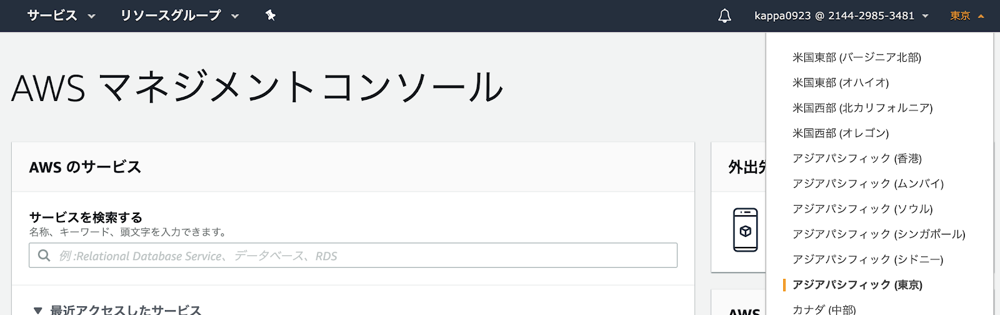
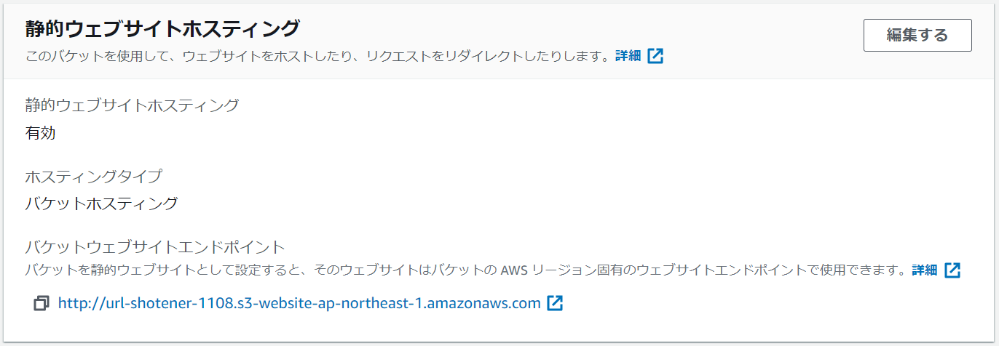
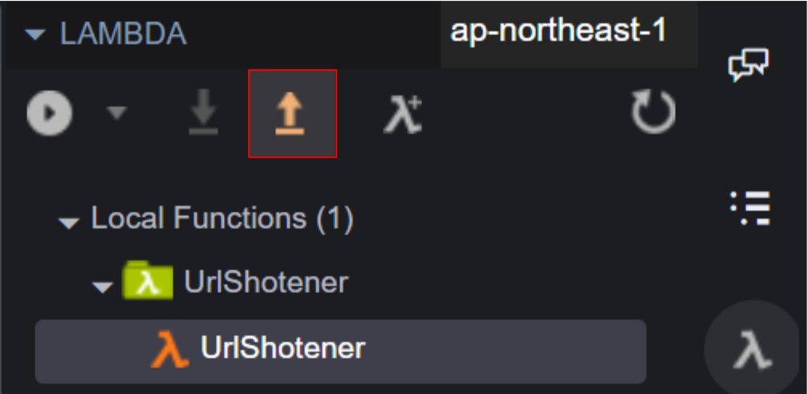
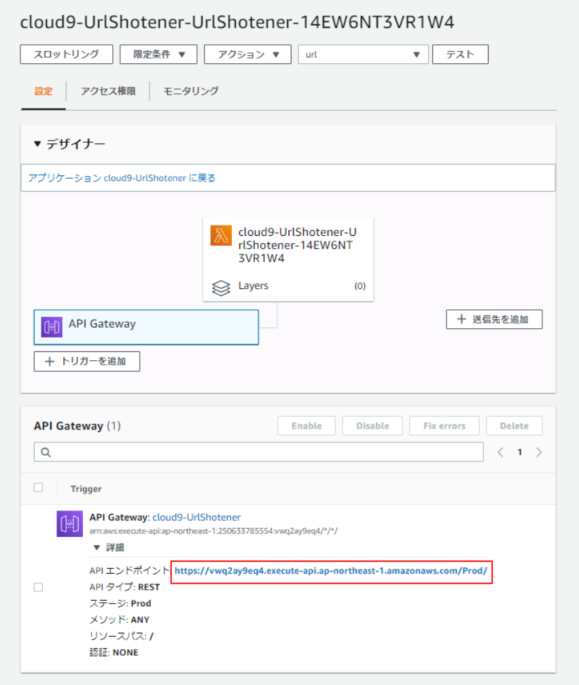

概要
AWSを利用したURL短縮サービスを開発しながら、サーバレスアプリの開発方法を学びましょう！
What you'll learn
- サーバレスとは何かを知る
- AWSサービスの使い方がわかる
- サービスを公開するまでの流れがわかる
URL短縮サービスとは？
こんな時に代わりになる短いURLを発行するサービスです。
サーバレスとは？
クラウドベンダーの提供しているサービスを組み合わせることで、サーバーの存在を意識せず開発・サービス提供が可能になる、というような考え方。
今回のハンズオンで登場するAWS Lambdaもサーバレス開発のコアを担うサービスの一つ。
Lambdaとは？
書いた関数を実行してくれるFaaS(Fanction As a Service)というジャンルのサービス。
関数をデプロイし、API経由で呼び出すなどして利用する。
アーキテクチャ概要図
- ClientがブラウザでS3にアクセスし、html, css, jsのWebアプリを表示
- WebアプリからAPI Gatewayを経由してLambdaを呼び出し
- Lambdaで短縮URLを生成
- Lambda から Ridiret Object をS3にデプロイ
この章でやること
- AWSにログインする
- Cloud9を起動する
AWSにログインする
リージョンは東京(ap-northeast-1)に設定する。

Cloud9を起動する
1.Create environment を選択
2.Step 1 - Name environment
- Name : url-shortener-1110 [任意の名前]
- Description : 空欄 [default]
- Next step
3.Step 2 - Configure settings
- Environment type : Create a new EC2 instance for environment (direct access) [default]
- Instance type : t2.micro (1 GiB RAM + 1 vCPU) [default]
- Platform : Amazon Linux 2
- Next step
4.Step 3 - Review
- Create environment

正常にCloud9が作成されれば、以下のような画面が表示される。

この章でやること
- Web画面の資材をCloud9にダウンロードする
- 資材をCloud9からS3にアップロードする
- Webサービスとして資材を公開する
- ホスティングされたページを確認する
Web画面の資材をCloud9にダウンロードする
ハンズオンで利用するWeb画面の資材をダウンロードする。
以下のコマンドを実行。
svn export https://github.com/MarkingCloud/handson-aws-url-shortner/trunk/public
ツリービューに public ディレクトリが追加される。

ディレクトリ構成は以下。
public
├── image
│ └── MC_icon_white.png
├── index.html
├── scripts
│ └── main.js
└── styles
└── main.css資材をCloud9からS3にアップロードする
資材をアップロードするバケットを作成する。
以下コマンドを実行。<バケット名>には世界で一意な名前を入れる。
aws s3 mb s3://<バケット名>
次に先ほどダウンロードした資材をバケットにアップロードする。
以下コマンドを実行。
aws s3 sync public s3://<バケット名>
Webサービスとして資材を公開する
以下の操作を行う。
1.プロパティ > 静的ウェブサイトホスティング > 編集する
- 静的ウェブサイトホスティング : 有効にする
- ホスティングタイプ : 静的ウェブサイトをホストする
- インデックスドキュメント : index.html
- エラードキュメント : error.html
- 変更の保存

2.アクセス許可 > ブロックパブリックアクセス (バケット設定) > 編集する
- [ ] パブリックアクセスをすべてブロック
- [x] 新しいアクセスコントロールリスト (ACL) を～
- [x] 任意のアクセスコントロールリスト (ACL) を～
- [ ] 新しいパブリックバケットポリシーまたは～
- [ ] 任意のパブリックバケットポリシーまたは～
- 変更の保存
- 「確認」と入力
- 確認
3.アクセス許可 > バケットポリシー > 編集する
- 以下入力(※<バケット名>を自分のバケット名に書き換える)
{
"Version": "2012-10-17",
"Statement": [
{
"Effect": "Allow",
"Principal": "*",
"Action": "s3:Get*",
"Resource": "arn:aws:s3:::<バケット名>/*"
}
]
}
- 変更を保存
ホスティングされたページを確認する
プロパティ > 静的ウェブサイトホスティング > バケットウェブサイトエンドポイント
に出力されているURLをクリック。
公開したWebページが表示されればOK。
まだ裏側は作成していないので、動作させても失敗する。
この章でやること
- Lambda と API Gateway を作成する
- Lambda に S3 へのアクセス権限を追加する
- Lambda のコードを作成する
Cloud9からリソース作成
Cloud9の右側のメニューから Create a new Lambda function を選択
リソース作成ダイアログが表示されるので以下の通り選択する。
1.Function名
- Function name : UrlShortener (任意の名前)
- Application name : UrlShortener (自動入力)
- Next
2.ランタイム
- Select runtime : Python 3.6
- Select blueprint : empty-python
- Next
3.トリガー
- Function trigger : API Gateway
- Resource Path : / (スラッシュのみ入力)
- Security : NONE
- Next
4.リソース・ロール
- Memory : 128 MB [default]
- Role : Automatically generate role [default]
- Next
5.設定確認
- Finish
セットアップが完了するとリソースが作成され、表示される。
Lambda に S3 へのアクセス権限を追加する
以下の操作を行う。
1.アクセス権限 > 実行ロール
- ロール名の出力URLをクリック
- IAM のコンソールへジャンプ
2.(IAMコンソール) アクセス権限 > ポリシーをアタッチします
- 「AmazonS3FullAccess」で検索
- AmazonS3FullAccess のチェックボックスにチェック
- ポリシーのアタッチ
Lambda のコードを作成する
Cloud9に戻り、lambda_function.py に以下のコードを張り付ける。
import boto3
import random
import string
import json
BUCKET_NAME = "your-bucket-name"
def generate_random(n):
return "".join(random.SystemRandom().choice(string.ascii_lowercase + string.digits) for _ in range(n))
def get_public_url(bucket):
s3client = boto3.client("s3")
bucket_location = s3client.get_bucket_location(Bucket=bucket)
return "http://{0}.s3-website-{1}.amazonaws.com/".format(
bucket,
bucket_location["LocationConstraint"])
def lambda_handler(event, context):
s3resorce = boto3.resource("s3")
bucket = s3resorce.Bucket(BUCKET_NAME)
short_id = generate_random(5)
short_key = "u/" + short_id
body = event.get("body")
res = bucket.put_object(
Key=short_key,
Body=b"",
WebsiteRedirectLocation=body,
ContentType="text/plain"
)
public_url = get_public_url(BUCKET_NAME)
shorten_url = (public_url + short_key)
return {
"statusCode": 200,
"headers": {
"Access-Control-Allow-Origin": "*"
},
"body": json.dumps(shorten_url)
};次にL6の BUCKET_NAME を自分が作成したバケット名に書き換える。
BUCKET_NAME = "your-bucket-name" ↓ BUCKET_NAME = "url-shortener-1112" //例
Ctrl + s で忘れずに保存する。
この章でやること
- Lambda関数をローカル実行する
- API Gateway経由でローカル実行する
- Lambdaをデプロイ
Lambda関数をローカル実行する
画面右側の Local Functions > 関数名を右クリック > Run > Run Local を選択する。
Payload タブに以下の内容を入力し、 Runボタン を選択するとLambdaがローカルで実行される。
{
"body": "https://markingcloud.connpass.com/event/193042/"
}実行が完了すると、Lambdaのログが画面中央に表示される。
Response の body に出力されているURLにアクセスし、リダイレクトされることを確認する。
API Gateway経由でローカル実行する
画面右側の Local Functions > 関数名を右クリック > Run > Run API Gateway Local を選択する。
以下の操作を行う。
- Functions : UrlShortener [default]
- Path : / [default]
- Method : POST
- Query string : 空欄 [default]
- Body : https://markingcloud.connpass.com/event/193042/
- Run
Response に出力されているURLにアクセスし、リダイレクトされることを確認する。
Lambdaデプロイ
ここまで確認出来たらLambdaをデプロイする。
画面右側の Local Functions > 関数名を選択 > deployボタンを選択
少し待つとデプロイが完了する。

この章でやること
- API Gateway のエンドポイントURLを取得する
- WebアプリにURLを埋め込む
- Webページにアクセスして動作確認する
API Gateway のエンドポイントURLを取得する
設定 > デザイナー > API Gateway > 詳細 を選択
API エンドポイントに出力されているURLをコピーする。

WebアプリにURLを埋め込む
Cloud9から public/script/main.js を開く。
L20の apiurl をコピーしたAPIエンドポイントのURLに書き換える。
const apiurl = "apigateway URL" ↓ const apiurl = "https://xxxxxxxxxx.execute-api.ap-northeast-1.amazonaws.com/Prod/"
Ctrl + s で忘れずに保存する。
再度、以下のコマンドでS3にデプロイする。
aws s3 sync public s3://<バケット名>
これでWebアプリの完成！
Webページにアクセスして動作確認する
プロパティ > 静的ウェブサイトホスティング > バケットウェブサイトエンドポイント
に出力されているURLをクリック。
公開したWebページが表示されるので、適当なURLを入力して動作確認を行う。
また、オブジェクト > /u にリダイレクトオブジェクトが追加されていることも確認する。
AWSを使ってURL短縮サービスを作成することができました！
複雑そうな処理もAWSを使えば簡単に実装できることが実感できたかと思います。
ここから先は各自思い思いに改良してみてください。
アンケート
最後にアンケートがありますので、より良い勉強会作りのためにご協力お願い致します。
不要なリソースが残っているとお金がかかるので、要らなければ削除しましょう。
Cloud9
- 対象のリソース(UrlShotener)にチェック
- Delete
- 「Delete」と入力
- Delete
S3
- 対象のリソースにチェック
- 空にする
- 「完全に削除」
- 空にする
- 終了
- 削除
- バケット名を入力
- バケットを削除
Lambda
- 対象のリソース(cloud9-UrlShotenerで始まる)にチェック
- アクション > 削除
- 削除
API Gateway
- 対象のリソース(cloud9-UrlShotener)にチェック
- Action > Delete
- 削除
IAM
- アクセス管理 > ロール
- 対象のリソース(cloud9-UrlShotenerで始まる)にチェック
- ロールの削除
- はい、削除します
参考に各サービスの料金をまとめる。
Cloud9
Cloud9 は裏で立ち上がるEC2、EBSに対してのみ料金が発生する。
https://aws.amazon.com/jp/cloud9/pricing/
S3
S3 はオブジェクトを置き続けると料金が発生するので注意。
https://aws.amazon.com/jp/s3/pricing/
Lambda
Lambda はリクエスト数と実行時間ごとに料金が発生する。
https://aws.amazon.com/jp/lambda/pricing/
API Gateway
API Gateway はリクエスト数ごとに料金が発生する。
https://aws.amazon.com/jp/api-gateway/pricing/
Cost Explorer
より詳細な利用料は